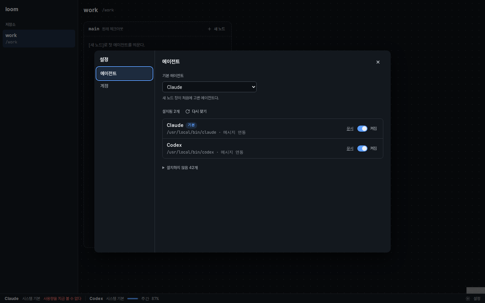

loom 설정: 에이전트 등록, 계정, 사용량
Orca의 「Agents」「Accounts」 설정과 상태 표시줄 사용량을 loom에 옮긴 목업이다. 바뀌는 구역만 그렸다. 폭은 1440 데스크톱 하나다. 승인할 것은 셋이다: ① 맨 아래 「결정표」의 넣기·빼기, ② 각 구역의 화면, ③ 「구조 제안」의 모듈 배치.
1. 화면 맨 아래: 사용량 상태 줄과 [설정]
문제점지금 쓰는 Claude·Codex 계정과 남은 사용량을 볼 곳이 없다. 설정으로 가는 진입점도 없다.
개선 사항Orca처럼 화면 맨 아래에 늘 보이는 상태 줄을 둔다. 공급자마다 한 칸에 계정과 5시간·주간 남은 비율을 보인다. 칸을 누르면 2번 팝오버가 열린다. 줄 오른쪽 끝에 [설정]을 둔다.


그래프(바뀌지 않음)
숫자는 남은 비율이다. 막대도 남은 양만큼 찬다. 25% 이하이면 막대가 노란색이다.
순서는 Orca 기본값을 따른다: Claude, Codex. 로그인한 계정이 없는 공급자는 칸 대신 「로그인하면 사용량을 본다」를 보인다.
사용량을 가져오는 중이면 그 칸만 흐리게 깜박인다. 오류면 칸에 오류 한 줄을 보인다.
2. 사용량 팝오버: 계정 바꾸기
문제점새 화면이다. 비교할 「전」이 없다.
개선 사항Orca 상태 표시줄 팝오버와 같은 일을 한다. 쓰는 계정의 두 창 비율과 초기화 시각을 보인다. 계정을 눌러 다음 새 노드가 쓸 계정을 바꾼다. 이미 도는 노드는 그대로다.
Claude
5시간58%
주간82%
5시간 창 초기화 15:40 · 주간 창 초기화 목 09:00 · 2분 전에 갱신
- 시스템 기본~/.claude
- work@example.com쓰는 중
- personal@gmail.com13% 남음
계정 옆 숫자는 그 계정의 5시간 창 남은 비율이다. 계정을 고를 때 남은 양을 비교한다.
[계정 관리…]는 4번 설정 창의 「계정」 탭을 연다.
팝오버는 1번 상태 줄의 칸 위에 뜬다.
오류는 줄 하나로 보인다. 예: 「다시 로그인해야 한다」, 「사용량을 지금 볼 수 없다」.
3. 설정 창 「에이전트」 탭
문제점에이전트가 Claude Code·Codex 둘로 고정돼 있다. 설치한 다른 CLI(Gemini, Cursor, OpenCode 등)를 노드로 띄우려면 「직접 입력」에 명령을 매번 적어야 한다.
개선 사항Orca 카탈로그 45개를 데이터로 옮긴다. 데몬이 PATH에서 설치된 것을 찾는다. 사용자는 쓸 것만 켜고 기본 에이전트를 고른다. 설치하지 않은 것은 접어 두고 문서 링크만 보인다.
「메시지 연동」은 docs/design.md 「프로필」의 Claude·Codex 프로필이다. 나머지는 「프로필 없음」이라
loom wait로만 메시지를 받는다.
「첫 지시문 없음」: Orca가 시작 뒤 입력창에 지시문을 써 넣는 에이전트다(stdin-after-start). loom은 PTY에 글자를 쓰지 않으므로 첫 지시문을 넘기지 않는다.
[다시 찾기]는 데몬이 PATH를 다시 훑는다. 설정을 열 때도 한 번 훑는다.
4. 설정 창 「계정」 탭과 로그인 창
문제점노드는 늘 사용자의 기본 로그인(
~/.claude, ~/.codex)으로 뜬다. 계정 하나가 한도에 닿으면 다른 계정으로 바꿀 방법이 없다.
개선 사항Orca처럼 공급자마다 계정을 여럿 둔다. 계정마다 loom이 만든 로그인 폴더(~/.loom/accounts/<공급자>/<id>)를 쓴다. [계정 추가]는 아래 로그인 창에서 CLI 로그인을 띄운다. 사용자의 기본 로그인 폴더는 고치지 않는다.
계정
Claude
시스템 기본
5시간88%주간70%
5시간88%주간70%
work@example.com 쓰는 중
5시간58%주간82%
5시간58%주간82%
old@gmail.com 다시 로그인 필요
사용량을 볼 수 없다
사용량을 볼 수 없다
Codex
시스템 기본 쓰는 중
5시간19%주간45%
5시간19%주간45%
Claude 계정 추가
$ CLAUDE_CONFIG_DIR=~/.loom/accounts/claude/a3 claude /login
Select login method:
❯ 1. Claude account with subscription
2. Anthropic Console account
Browser didn't open? Use the url below to sign in:
https://claude.ai/oauth/authorize?…
로그인이 끝나면 창이 닫히고 계정이 목록에 생긴다. 취소하면 만든 폴더를 지운다.
로그인 창은 노드 카드와 같은 터미널이다. 그래프에는 나타나지 않는다.
지우기는 확인 창을 띄운다. loom이 만든 로그인 폴더만 지운다. 「시스템 기본」은 지울 수 없다.
사용량 출처: Claude는 로그인 폴더의 토큰으로
api.anthropic.com/api/oauth/usage를 부른다. Codex는 codex app-server의 account/rateLimits/read를 부른다. 둘 다 Orca와 같은 출처다.
5. 새 노드 창: 프로필 → 에이전트
문제점「프로필」 칸이 Claude Code·Codex·직접 입력 셋으로 고정돼 있다. 설정에서 켠 에이전트를 고를 수 없다.
개선 사항「에이전트」 선택 칸으로 바꾼다. 켠 에이전트와 「직접 입력」만 보인다. 기본 에이전트를 처음에 고른다. Claude·Codex를 고르면 쓸 계정을 한 줄로 보인다.
노드 카드 머리의 「Claude Code」 글자는 에이전트 이름(카탈로그의 label)으로 바뀐다. 카드 모양은 그대로다.
결정표: Orca 기능 가운데 넣을 것과 뺄 것
권장안을 적었다. 바꿀 줄만 말한다. 묻는다 줄은 답이 필요하다.
| Orca 기능 | loom에서 | 권장 | 이유 |
|---|---|---|---|
| 에이전트 카탈로그 45개 | Orca 표를 데이터 파일로 옮긴다 | 넣는다 | 목록을 지어내지 않는다. Orca가 고치면 표만 다시 옮긴다. |
| 설치 탐지, [Refresh] | 데몬 PATH에서 찾는다, [다시 찾기] | 넣는다 | 요청의 「탐색」이다. |
| Enabled/Disabled | 켜기·끄기 | 넣는다 | 요청의 「등록」이다. 새 노드 창 목록을 줄인다. |
| Default Agent (Auto 포함) | 기본 에이전트 선택. Auto는 두지 않는다 | 넣는다 | 고르지 않았으면 켠 것 가운데 첫째를 쓴다. Auto와 같은 결과라 옵션을 하나 줄인다. |
| Available to install, Docs | 접은 목록과 문서 링크 | 넣는다 | 설치 방법을 찾는 곳이다. |
| Install 버튼(설치 명령 실행) | — | 뺀다 | 설치는 사용자 셸에서 한다. 문서 링크로 충분하다. |
| 명령 재정의(Command) | 실행 파일 경로 한 칸 | 묻는다 | PATH 밖에 설치한 CLI를 쓰려면 필요하다. 권장: 뺀다. 데몬을 띄운 셸 PATH에 넣으면 된다. 필요해지면 더한다. |
| 기본 인자(Arguments), 환경 변수(Environment) | — | 뺀다 | 「직접 입력」에 명령 전체를 적으면 같은 일을 한다. |
| Agent Permissions (Yolo/Manual) | — | 뺀다 | 에이전트마다 플래그가 다르다. 인자로 넘기는 일이라 위와 같다. |
| Claude·Codex 계정 여러 개, 시스템 기본 | 4번 화면 | 넣는다 | 요청의 「계정 관리」다. |
| 계정마다 따로 둔 로그인 폴더 | ~/.loom/accounts/<공급자>/<id> | 넣는다 | 사용자의 ~/.claude·~/.codex를 고치지 않는다(docs/design.md 「프로필」). |
| Needs re-auth, [Re-authenticate] | 「다시 로그인 필요」, [다시 로그인] | 넣는다 | 토큰이 만료되면 사용량과 노드가 모두 실패한다. |
| 하단 상태 줄 사용량(늘 보임) | 1번 화면. 공급자 순서 Claude, Codex | 넣는다 | 사용자 지시: 「사용량은 orca처럼 하단에 항상 뜨도록」. |
| 5시간·주간 비율, 초기화 시각 | 1·2·4번 화면 | 넣는다 | 요청의 「남은 사용량 표시」다. |
| Codex 한도 초기화 크레딧 [Reset now] | — | 뺀다 | 돈이 드는 동작이다. Codex 화면에서 한다. |
| Claude 추가 사용량(금액), 모델별 주간 한도 | — | 뺀다 | 계정 고르기에 필요한 값은 5시간·주간 두 창이다. |
| 상태 줄 끄기, 항목 고르기 | — | 뺀다 | loom 상태 줄 항목은 사용량 둘과 [설정]뿐이다. |
| Compact/Detailed 표시 전환 | 늘 두 창(5시간·주간)을 보인다 | 뺀다 | 공급자가 둘이라 자리가 남는다. Orca의 Compact는 공급자마다 대표값 하나만 보인다. |
| 사용 비율/남은 비율 전환(기본 「used」) | 남은 비율만 보인다 | 뺀다 | 요청이 「남은 사용량 표시」다. 전환 옵션을 두지 않는다. |
| 사용량 갱신 주기 | 데몬이 5분마다, 팝오버를 열 때, [새로 고침] | 묻는다 | Orca의 주기는 확인하지 못했다. 5분이면 공급자 API의 429(요청 제한)를 피한다. 다른 값이 필요하면 말한다. |
| 계정 고르는 단위 | 공급자마다 「쓰는 중」 계정 하나. 새 노드가 그 계정으로 뜬다 | 묻는다 | Orca와 같다. 다른 안: 새 노드 창에서 노드마다 계정을 고른다. 칸이 하나 늘어난다. |
구조 제안: 모듈, 파일, 인터페이스
AGENTS.md 10절에 따라 구현 전에 확인받는다. 레이어 규칙(docs/design.md 「레이어」)을 따른다: 기능 모듈끼리 부르지 않고, 데몬 라우트가 엮는다.
| 레이어·파일 | 바뀌는 이유 | 맡는 일과 인터페이스 |
|---|---|---|
기능 · src/profile.rs + src/agents.json | CLI 버전, Orca 카탈로그 | 카탈로그를 데이터로 둔다(id, label, 실행 명령, 별칭, 문서 링크, 첫 지시문 방식, 메시지 연동). catalog(), detect(&Agent) -> Option<PathBuf>, command(&Agent, brief, env, cwd). Start는 Agent { agent, brief }·Command { line } 둘이 된다. 첫 지시문 방식은 enum Prompt { Argv { separator }, Flag(&str), None }이다. |
기능 · src/accounts.rs | 공급자 로그인 폴더 형식 | Provider { Claude, Codex }, AccountId. 계정 목록의 원천은 ~/.loom/accounts/<공급자>/ 폴더다. list(Provider)(이메일은 각 폴더 파일에서 읽는다), create(Provider) -> (AccountId, 로그인 명령), remove, launch_env(Provider, AccountId) -> Vec<(키, 값)>(CLAUDE_CONFIG_DIR, CODEX_HOME). |
기능 · src/usage.rs | 공급자 사용량 API | fetch(Provider, 로그인 폴더) -> Usage { session: Window, weekly: Window }, Window { used_percent, resets_at }. 결과는 데몬이 계정마다 5분 캐시한다. |
| 저장 · 2단위 저장 모듈 | 저장 형식 | 설정 세 값: 끈 에이전트 목록, 기본 에이전트, 공급자마다 쓰는 계정. 「큐」 브랜치가 main에 병합된 뒤 그 모듈의 표에 더한다. |
조합 · src/daemon.rs | 화면 요구 | GET /api/agents, POST /api/agents/refresh, PUT /api/settings, GET /api/accounts(사용량 포함), POST /api/accounts/{공급자}(로그인 PTY id를 돌려준다), PUT /api/accounts/{공급자}/active, DELETE /api/accounts/{공급자}/{id}, POST /api/usage/refresh. 로그인 PTY는 기존 NodeHost로 띄우고 노드 목록에 넣지 않는다. |
상호작용 · web/src/ | 화면 | 새 파일 Settings.tsx(창과 두 탭), StatusBar.tsx(하단 상태 줄과 사용량 팝오버). 고칠 파일 NewNodePopover.tsx, NodeCard.tsx(label), App.tsx(화면 맨 아래 줄), api.ts. 로그인 창은 기존 Terminal.tsx를 쓴다. |
새 의존성
| 이름@버전 | 대체 범위 |
|---|---|
which@8 | PATH에서 실행 파일 찾기. Windows의 PATHEXT까지 맡는다. 직접 PATH를 훑는 코드를 쓰지 않는다. |
reqwest@0.12 (rustls, json) | Claude 사용량 HTTPS 호출 하나. Codex는 CLI(codex app-server)를 부르므로 HTTP가 필요 없다. |
조각 순서
- 로직 A: 카탈로그·탐지·
Start변경과/api/agents. 저장과 무관하다. 지금 시작한다. - 로직 B: 계정 폴더·로그인·사용량 조회와 계정 API. 쓰는 계정 선택만 저장이 필요하다. 그 전에는 「시스템 기본」을 쓴다.
- 로직 C: 설정 세 값의 저장. 「큐」 브랜치 병합 뒤 시작한다.
- 화면: 1~5번 구역. 로직 A·B를 합친 뒤 시작한다.
확인하지 않은 것
- macOS에서 Claude 토큰은 키체인에 있다. 첫 구현은
.credentials.json(Linux·Windows)만 읽고, macOS에서는 「사용량을 볼 수 없다」를 보인다. - Codex 로그인은 브라우저 콜백(localhost 1455 포트)을 쓴다. 도커 개발 컨테이너 안에서는 끝까지 확인할 수 없다. 호스트에서 확인한다.
점검 기록
- impeccable detect(2026-10-19, 1회): 3건. 「얇은 테두리와 넓은 그림자」 2건은 설정 창 테두리를 지워 고쳤다. 「제목 크기 단계가 평평함」 1건은 문서 제목을 26px·20px로 키워 고쳤다. 제품 화면 글자 크기는 main.html 승인본을 그대로 쓴다.
- WIG(1회): 아이콘만 있는 버튼에
aria-label을 달았고 장식 아이콘에aria-hidden을 달았다. 네이티브select에 배경색과 글자색을 정했다. 숫자는tabular-nums다. 구현 때 지킬 것: 계정 지우기는 확인 창을 띄운다. 초기화 시각은Intl.DateTimeFormat으로 쓴다. 긴 이메일은 말줄임한다. 설정 창은overscroll-behavior: contain을 쓰고 열린 탭을 URL hash(#settings/agents)에 둔다. 경로와 명령은translate="no"를 단다. - 오탐으로 둔 것: WIG의 「placeholder는 …로 끝낸다」는 승인본 main.html의 문장형 한국어 안내와 맞지 않아 그대로 둔다.